Zentsuji, Kagawa: things to do, food and stays
Zentsuji · Kagawa
Zentsuji
Highlighted on the Kagawa map.
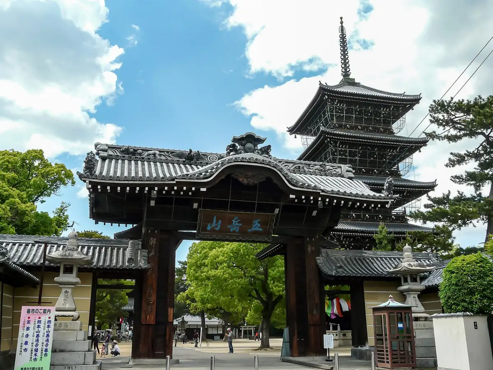
Stay
善通寺グランドホテル
Zentsuji Grand Hotel
Hotel in Kamiyoshida, Zentsuji with parking.
ゲストハウス ミカサスカサ
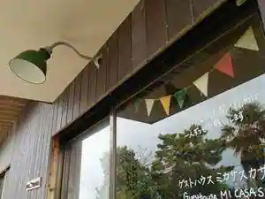
Guesthouse Mikasasukasa
Dining
釜あげうどん 長田 in 香の香
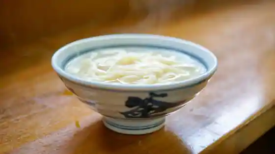
Kama Ageudon Nagata in Kaori No Kaori
山下うどん
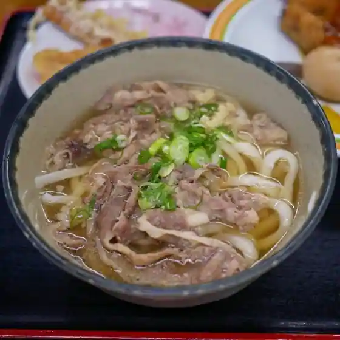
Yamashita Udon
宮川製麺所
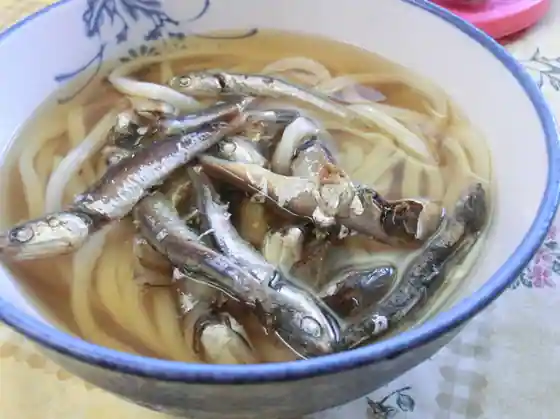
Miyagawa Seimen Tokoro
白川うどん
Shirakawa Udon
本格手打 あかみち
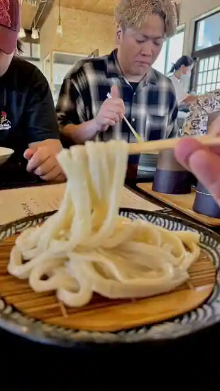
Honkaku Teuchi Akamichi
まるやうどん
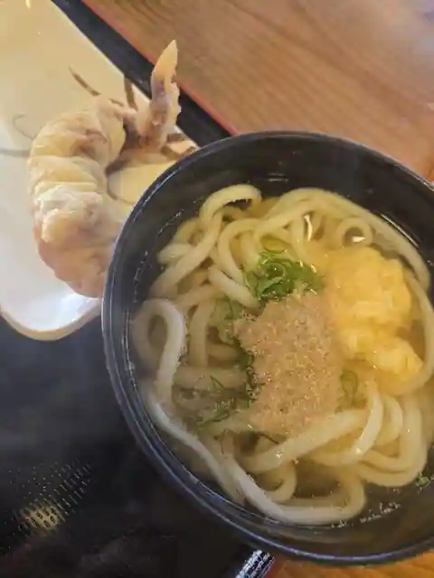
Maruyaudon
川川うどん
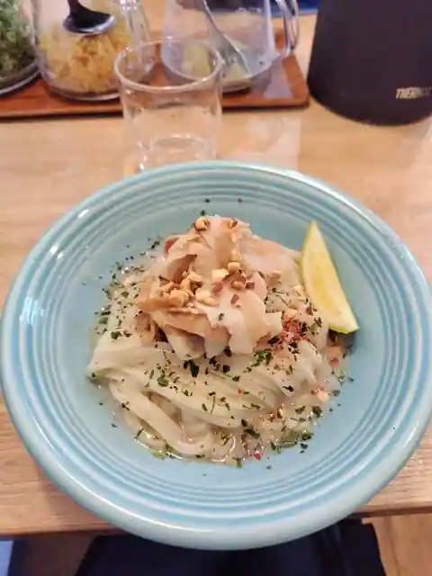
Kawa Kawa Udon
熊岡菓子店
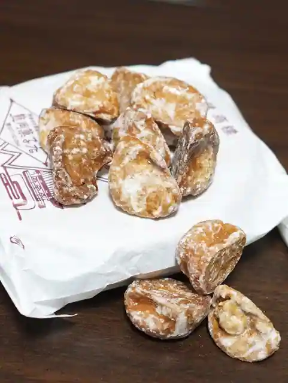
Kumaoka Kashi
手打ちうどん 空
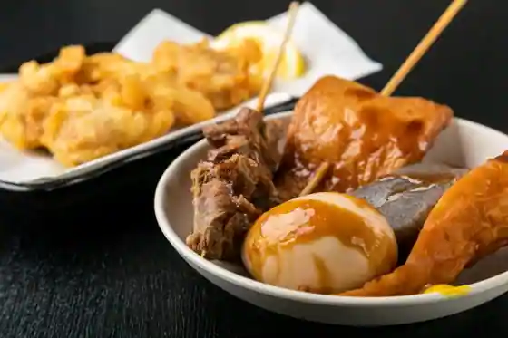
Teuchi Chiudon Sora
こだわり八輻
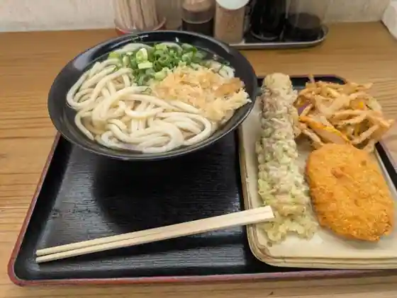
Kodawari Hachi Fuku
麺賊
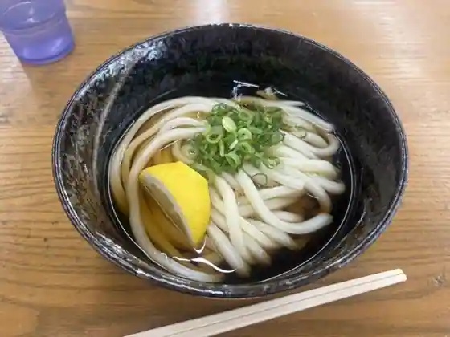
Men Zoku
ジャンボうどん 高木
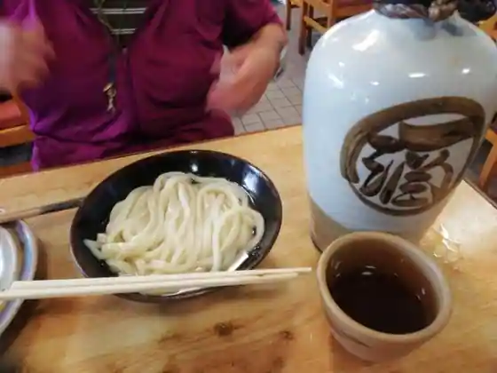
Janbo Udon Takagi
大川製麺所
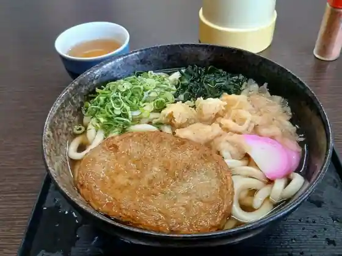
Okawa Seimen Tokoro
はなや食堂
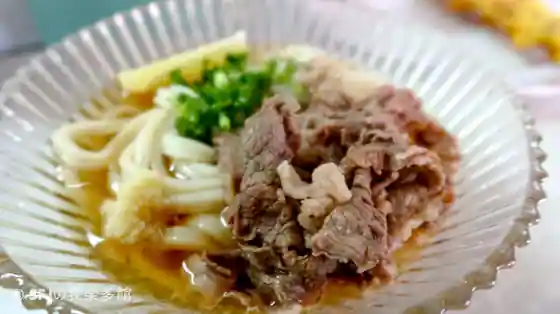
Hanaya Shokudo
カフェ テリア
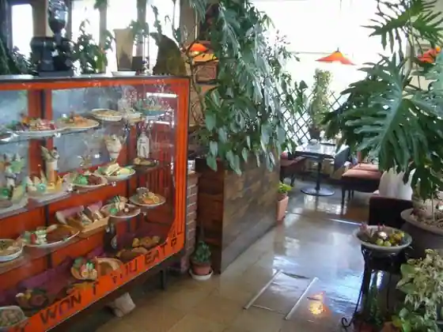
Cafe Teria
Belle Epoque 偕行社かふぇ
Belle Epoque Kaiko Sha Cafe
焼肉松坂 国道店
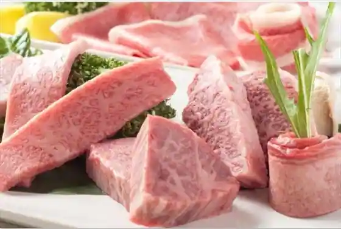
Yakiniku Matsusaka Kokudo
松村食堂
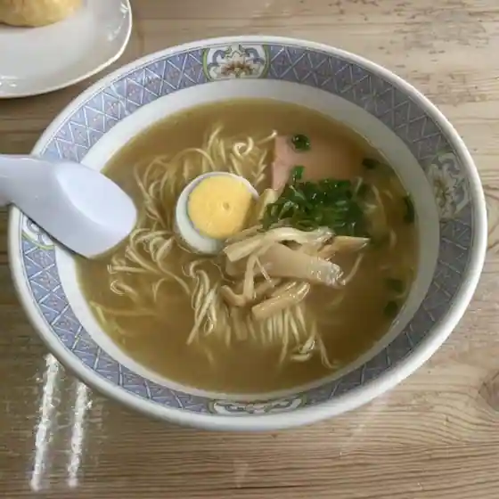
Matsumura Shokudo
ランプ 山地ファーム
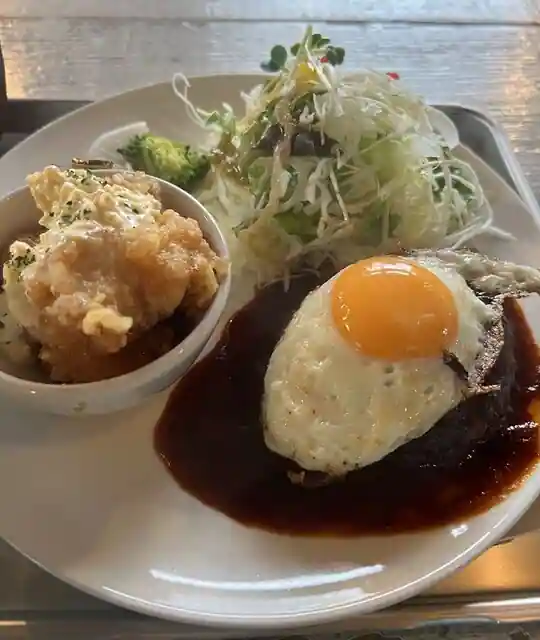
Ranpu Sanchi Famu
製麺 七や 319号店
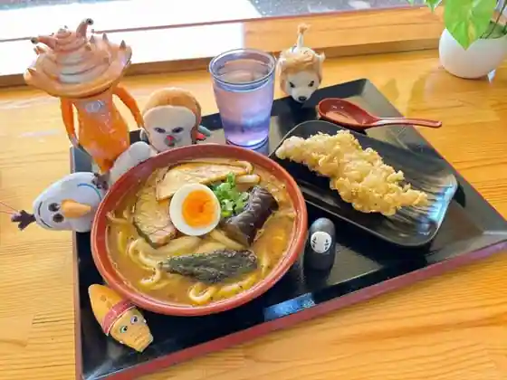
Seimen Shichi Ya 319 Go
ベーカリー KAMO
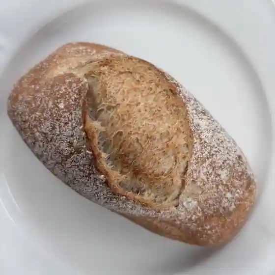
Bakery KAMO
すし遊館あさひ 善通寺店
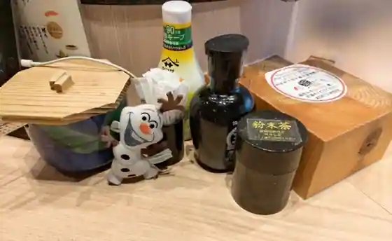
Sushi Yu Kan Asahi Zentsuji
オハラうどん
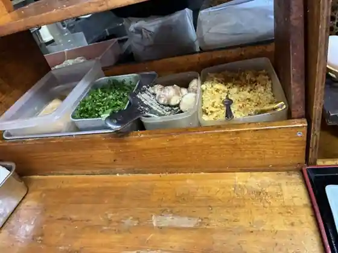
Ohara Udon
香川家
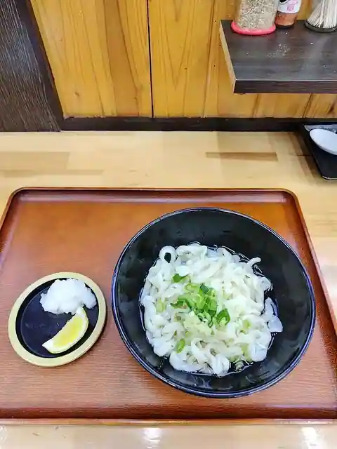
Kagawa Ie
Sights
Sohonzan Zentsuji
Mandara Tera
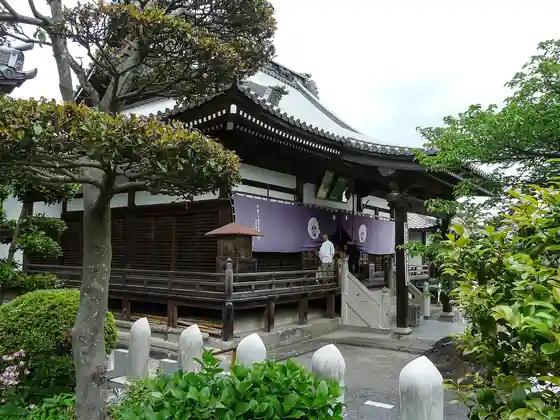
Shutsu Shaka Tera
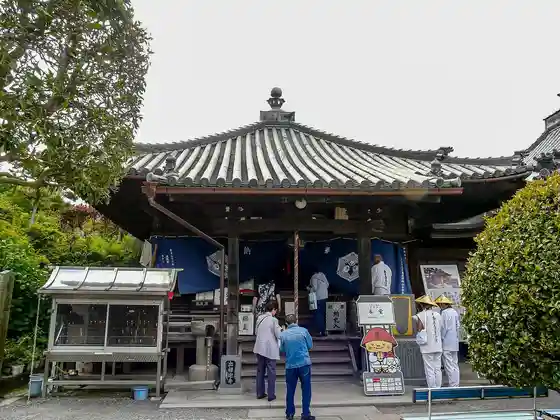
Kozan Tera
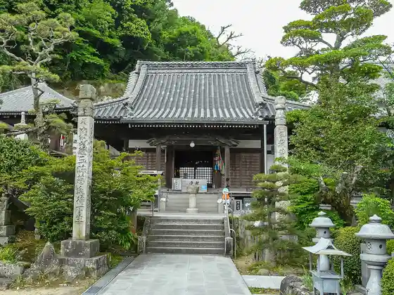
Zentsuji Eki
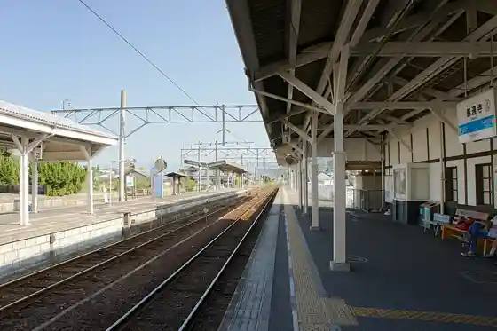
Zentsuji Art Museum